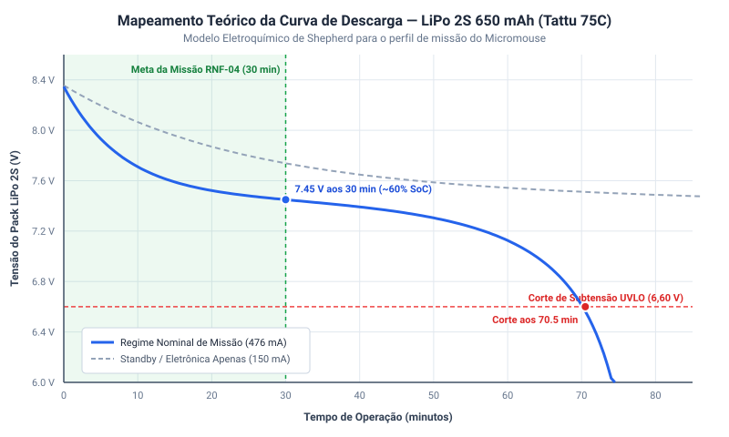

Mapeamento Eletroquímico e Curva de Descarga da Bateria LiPo 2S¶
1. Contextualização e Objetivos da Engenharia¶
O subsistema de energia do Micromouse adota como fonte primária o pack de baterias recarregável Tattu LiPo 2S1P 650 mAh 75C (\(7{,}4\text{ V}\) nominal | \(8{,}4\text{ V}\) plena carga | conector XT-30). O comportamento dinâmico de descarga de células à base de Polímero de Lítio (LiPo) sob demanda de corrente contínua é altamente não linear, exibindo três fases físico-químicas distintas: 1. Zona Exponencial Inicial: Queda rápida da tensão de circuito aberto logo após a saída do carregador (\(8{,}40\text{ V} \to 7{,}60\text{ V}\)), provocada pela estabilização da dupla camada eletroquímica nos eletrodos. 2. Platô Nominal de Operação: Vasta faixa quase linear onde a reação de intercalação dos íons de lítio no ânodo de grafite mantém a tensão estável entre \(7{,}50\text{ V}\) e \(7{,}20\text{ V}\) durante a maior parte da corrida. 3. Joelho de Descarga Profunda (Knee): Queda exponencial abrupta de tensão quando a concentração de íons disponíveis se esgota (\(< 7{,}0\text{ V} \to 6{,}0\text{ V}\)), ponto em que a extração continuada de corrente causa danos químicos irreversíveis à célula.
A modelagem matemática dessa curva atende aos seguintes objetivos fundamentais do projeto (Issue #139):
* Emulação Realista no Firmware (Issue #215): Prover à classe SensorBateriaMock uma tabela de correspondência exata para gerar leituras de telemetria reproduzíveis no Dashboard web antes da integração da placa física.
* Salvaguarda de Subtensão (Under-Voltage Lockout — UVLO): Parametrizar a máquina de estados do robô para desarmar os motores aos \(6{,}60\text{ V}\) (\(3{,}30\text{ V/célula}\)), impedindo danos térmicos ou perda de ciclo de vida da bateria.
* Gabarito Teórico para Ensaios de Bancada: Estabelecer uma curva teórica de referência calibrada para comparar com as medições experimentais em bancada com carga ativa.
2. Modelo Eletroquímico de Shepherd Modificado¶
Para descrever a dinâmica da célula LiPo sem recorrer a simulações de elementos finitos pesadas, implementou-se o modelo analítico consagrado de Shepherd modificado (formalizado por Tremblay e Dessaint):
Como o pack possui topologia 2S1P (duas células em série):
Parâmetros Eletroquímicos Adotados¶
| Parâmetro | Símbolo | Valor Adotado | Unidade | Descrição Física |
|---|---|---|---|---|
| Tensão do Patamar Eletroquímico | \(E_0\) | \(3{,}740\) | \(\text{V}\) | Tensão de circuito aberto intrínseca da célula |
| Resistência Interna por Célula | \(R\) | \(15\) | \(\text{m}\Omega\) | Resistência ôhmica interna (\(30\text{ m}\Omega\) total no pack 2S) |
| Corrente Média em Corrida | \(I\) | \(0{,}426\) | \(\text{A}\) | Demanda líquida contínua do robô a 7,4 V nominal |
| Coeficiente de Polarização | \(K\) | \(0{,}085\) | \(\text{V}\) | Efeito de polarização e saturação na zona final de descarga |
| Capacidade Nominal da Célula | \(Q\) | \(0{,}650\) | \(\text{Ah}\) | Capacidade de catálogo (\(650\text{ mAh}\)) |
| Carga Descarregada Acumulada | \(Q_{\text{d}}\) | \(I \cdot t\) | \(\text{Ah}\) | Integral da corrente de descarga ao longo do tempo |
| Amplitude da Zona Exponencial | \(A\) | \(0{,}440\) | \(\text{V}\) | Sobrepotencial transitório pós-carga por célula |
| Constante de Capacidade Inversa | \(B\) | \(16{,}0\) | \(\text{Ah}^{-1}\) | Taxa de decaimento da zona exponencial de relaxamento |
3. Simulação Teórica Computacional¶
O script de engenharia em Python scripts/curva_descarga_lipo.py simula o comportamento da bateria sob dois regimes operacionais:
1. Regime Nominal de Corrida (\(426\text{ mA}\)): Robô em exploração contínua com motores N20 acionados (\(6{,}0\text{ V}\) via U4), placa ESP32-C3 Super Mini com rádio ativo (\(5{,}0\text{ V}\) via U2) e barramento I²C de sensores com 3× ToF VL53L0X e IMU MPU6050 (\(3{,}3\text{ V}\) via U5).
2. Regime de Baixo Consumo / Standby (\(150\text{ mA}\)): Robô estático aguardando partida ou processando telemetria.
O gráfico vetorial resultante demonstra a correlação entre tempo decorrido, tensão de terminal e o corte regulamentar de 30 minutos (RNF-04):

4. Tabela de Correlação: Estado de Carga (SoC) vs. Tensão de Terminal¶
A correspondência exata entre o Estado de Carga (State of Charge — SoC), a tensão nos terminais do pack 2S sob carga nominal de \(426\text{ mA}\) e a capacidade remanescente é apresentada na tabela a seguir:
| Estado de Carga (SoC) | Tensão do Pack 2S (\(V_{\text{pack}}\)) | Tensão por Célula (\(V_{\text{cel}}\)) | Capacidade Restante (mAh) | Regime Operacional / Diagnóstico |
|---|---|---|---|---|
| 100% | 8,35 V a 8,40 V | 4,17 V a 4,20 V | 650 mAh | Bateria plena pós-carregamento balanceado |
| 90% | 7,78 V | 3,89 V | 585 mAh | Fim da zona de decaimento exponencial inicial |
| 80% | 7,57 V | 3,78 V | 520 mAh | Início do platô estável de corrida |
| 70% | 7,48 V | 3,74 V | 455 mAh | Platô nominal (~67% SoC aos 30 min de prova — RNF-04) |
| 60% | 7,44 V | 3,72 V | 390 mAh | Operação contínua em platô nominal |
| 50% | 7,39 V | 3,69 V | 325 mAh | Metade da carga útil |
| 40% | 7,32 V | 3,66 V | 260 mAh | Operação em corrida contínua segura |
| 30% | 7,19 V | 3,60 V | 195 mAh | Alerta amarelo no Dashboard de telemetria |
| 20% | 6,92 V | 3,46 V | 130 mAh | Aproximação do joelho de descarga rápida |
| 10% | 6,09 V | 3,05 V | 65 mAh | Zona de esgotamento acentuado |
| 0% (Corte UVLO) | 6,60 V | 3,30 V | ~45 mAh (7%) | Desarme forçado via software (PWM = 0) |
5. Integração com a Camada de Firmware¶
A curva matemática e a tabela de calibração foram exportadas para a biblioteca C++ do microcontrolador em src/firmware/lib/simulacao/TabelaDescargaLiPo.h. Essa interface provê:
// Consulta de tensão teórica por tempo de corrida
float obterTensaoBateriaTeorica(float segundosDecorridos, float correnteMediaA);
// Interpolação linear do SoC a partir da tensão amostrada pelo ADC
float estimarSoCPorTensao(float tensaoPackMedida);
Regras de Proteção Implementadas:¶
- Supervisão Contínua de Tensão: Leituras periódicas do ADC (
BAT_ADC_TEST/ADC1) com filtro passivo (C5 = 100 nF) e média móvel para rejeitar ruídos de chaveamento da ponte H. - Desarme Automático (UVLO Lockout): Caso a tensão atestada seja \(\le 6{,}60\text{ V}\) por mais de 3 amostragens consecutivas, o firmware zera os sinais de modulação PWM para o driver DRV8833 (
U6), congelando a movimentação e emitindo alerta crítico na telemetria. - Preservação da Regulação dos Conversores Buck MP1584EN (
U4+6V0,U2+5V0 eU5+3V3): O corte em 6,60 V assegura que os três conversores Step-DownMP1584ENoperem com margem de tensão adequada em suas entradas, mantendo estáveis os barramentos dos motores (+6,0 V), do microcontroladorESP32-C3 Super Mini(+5,0 V) e dos sensores laserVL53L0Xe IMUMPU6050(+3,3 V).
6. Protocolo de Ensaio de Bancada e Validação Experimental (Planejado)¶
Para consolidar a homologação experimental assim que o pack físico e a carga de teste estiverem disponíveis, estabelece-se o seguinte protocolo de ensaio em bancada:
6.1 Instrumentação de Teste Necessária¶
- Carga Eletrônica Ativa DC Programável (ou banco resistivo cerâmico comutável com \(R_{\text{carga}} \approx 17{,}4\ \Omega\) para drenar \(426\text{ mA}\) em \(7{,}4\text{ V}\)).
- Multímetro Digital de Precisão (DMM) com interface de aquisição de dados (leitura mínima de 4½ dígitos para registrar \(V_{\text{pack}}\) a cada 5 segundos).
- Shunt de Corrente / Amperímetro em série para monitorar estabilidade da drenagem.
- Sensor de Temperatura Termopar tipo K fixado na superfície externa do pack para monitorar elevação térmica (\(T_{\text{pack}} \le 45\text{ °C}\)).
6.2 Procedimento Experimental¶
- Carregar o pack LiPo 2S até \(8{,}40\text{ V} \pm 0{,}02\text{ V}\) em carregador balanceador inteligente (corrente de 0,6 A em modo LiPo Balance).
- Deixar a célula em repouso térmico por 30 minutos após a carga.
- Conectar à carga ativa ajustada em modo Corrente Constante (\(CC = 426\text{ mA}\)).
- Iniciar o registrador de dados (data logger) sincronizado com o disparo da carga.
- Encerrar a descarga imediatamente ao atingir o limiar de corte de \(6{,}60\text{ V}\).
- Exportar os dados de tempo e tensão para formato CSV em
data/ensaios/descarga_lipo_experimental.csv.
6.3 Critérios de Aceitação e Ajuste de Parâmetros¶
- Erro Médio Quadrático (RMSE): O desvio entre os pontos medidos em bancada e a curva de Shepherd teórica deve ser inferior a \(3\%\) na faixa de \(8{,}4\text{ V}\) a \(6{,}9\text{ V}\) (\(80\%\) da capacidade útil).
- Calibração de Parâmetros: Caso o desvio pontual exceda 5%, os coeficientes \(E_0\), \(R\) e \(K\) no script
curva_descarga_lipo.pye no cabeçalhoTabelaDescargaLiPo.hserão refinados com base na curva empírica levantada.
Histórico de Versão¶
| Versão | Data | Descrição | Autor(es) | Revisor(es) |
|---|---|---|---|---|
| 1.0 | 18/10/2026 | Criação do modelo de Shepherd modificado, simulação em Python e tabela SoC para o firmware (#139) | Elias Oliveira | Bruno Duarte |
| 1.1 | 20/10/2026 | Modularização no diretório energia/ e adição do protocolo de ensaios de bancada planejado |
Elias Oliveira | Equipe de Energia |
| 1.2 | 23/10/2026 | Alinhamento com a Revisão 2.0 de Hardware: atualização da corrente média de missão para 426 mA, substituição das referências ao LM2596/LiDAR pelos conversores MP1584EN (U2, U4, U5), sensores 3× VL53L0X + MPU6050 e nó BAT_ADC_TEST (C5 = 100 nF) |
Paulo Melo | Equipe de Energia e Hardware |